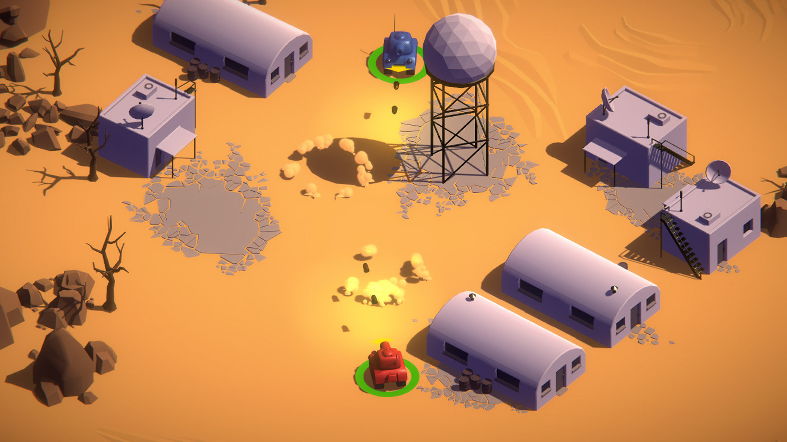

Durante el desarrollo de la asignatura de Videojuegos para Plataformas y Dispositivos Específicos, se trabajó de forma profunda en la adaptación y optimización de proyectos para diferentes hardwares de la industria. El núcleo del curso se centró en el proyecto 'TANKS!' en Unity, un videojuego con vista cenital para dos jugadores donde los tanques deben eliminarse entre sí para ganar rondas. Este proyecto fue adaptado con éxito a múltiples plataformas: dispositivos móviles Android, PlayStation 4 (implementando el sistema de trofeos y trabajando directamente con el DEVkit profesional), Realidad Virtual (testeado con gafas de realidad virtual) e incluso Realidad Aumentada. Adicionalmente, se exploraron proyectos independientes enfocados en el despliegue de videojuegos para plataformas web.
